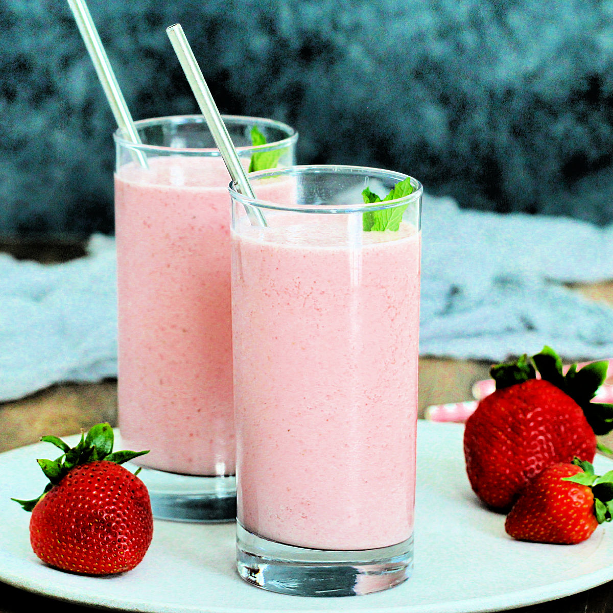

Home
Strawberry Lassi

Description:
A refreshing yogurt based smoothie.
An Indian drink thats also very popular in Pakistan, famous for being a fantastic and delicious way to cool down on hot summer days.
Ingredients:
- 2 Cups Yogurt (Non-Greek)
- 1 Cup Milk
- 1 Cup Strawberry Puree
- 4 Tablespoons Sugar
Recipe:
- Whisk Yogurt into more fluid state
- Mix Yogurt and Sugar
- Mix Yogurt with Strawberry Puree
- Mix Milk with Strawberry Yogurt